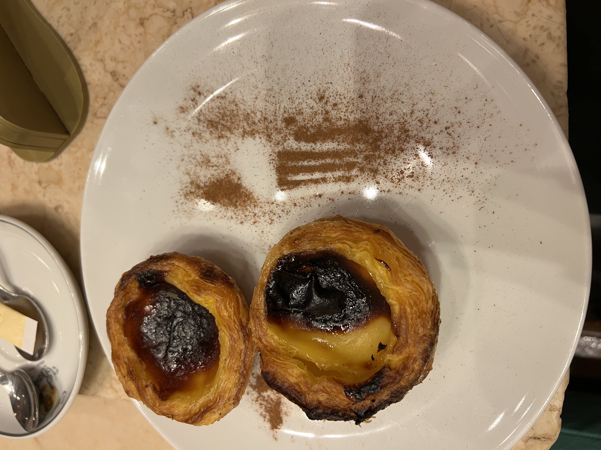
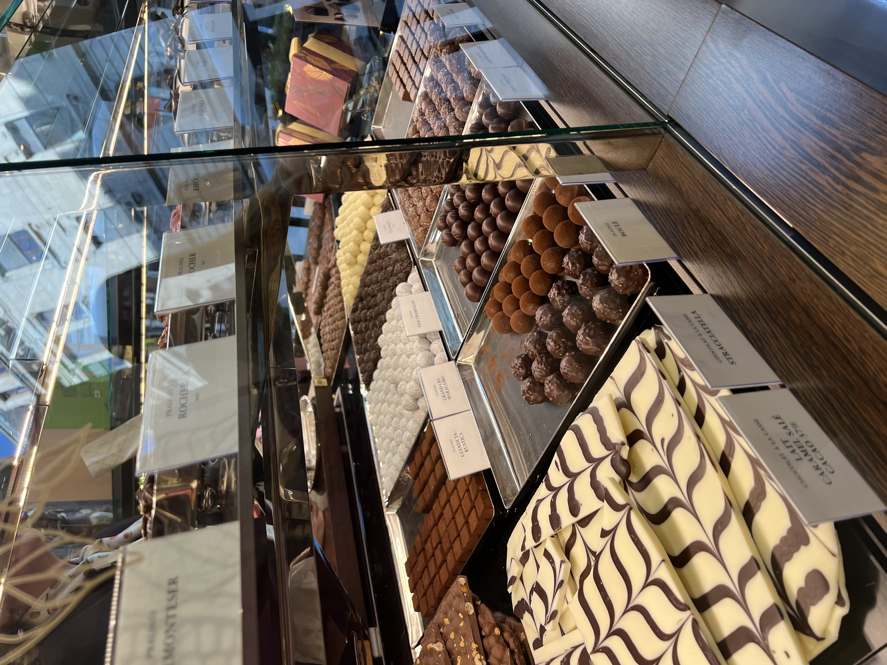
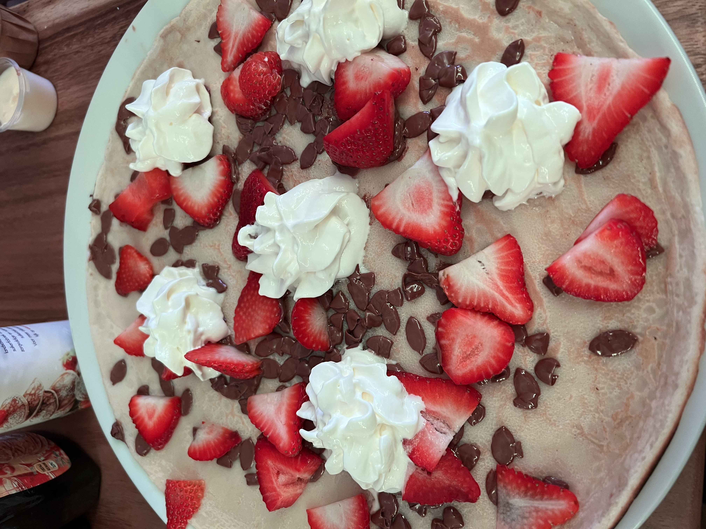
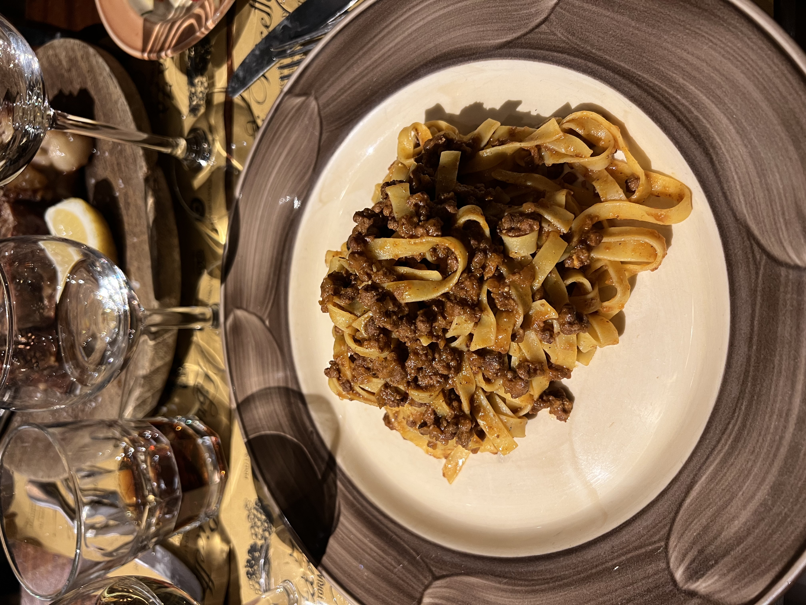

Valencia is a small city but has so many great foods to try. Like most of Spain, sangria is a popular drink and the paella here is incredible. If you like seafood, the squid-ink paella is definitely one to try. If you are like me and don't love fish, try the chicken and vegetable paella instead!

Paris is known for their croissants, crepes, baguettes and much more. Whether you are a sweet or savory person, you are bound to find something that interests you.

One of the foods that Portugal is known for is a custard tart that is known as "pastel de nata." They are the perfect balance of something sweet and fruity.
Amsterdam is a beautiful city in the Netherlands. The most popular food here are the pancakes, also known as "pannenkoeken." Similarly to Paris, you can find pancakes that can help you with your sweet or savory craving. These are delicious and are a must try!
Switzerland was another amazing country and was by far my favorite place we went to. In Switzerland we visited two cities - Geneva and Interlaken. Both were amazing places with great food options! Switzerland is of course known for their amazing chocolates. If you go to Switzerland and don't try their chocolate, you did it wrong.
Italy was the last country we visited while traveling around Europe. While you are in Italy, you cannot pass up eating pasta, pizza, and gelato for every meal. Try different sauces and shapes of pasta and I promise you won't regret it!
